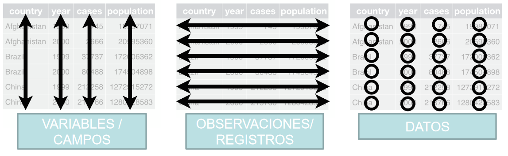
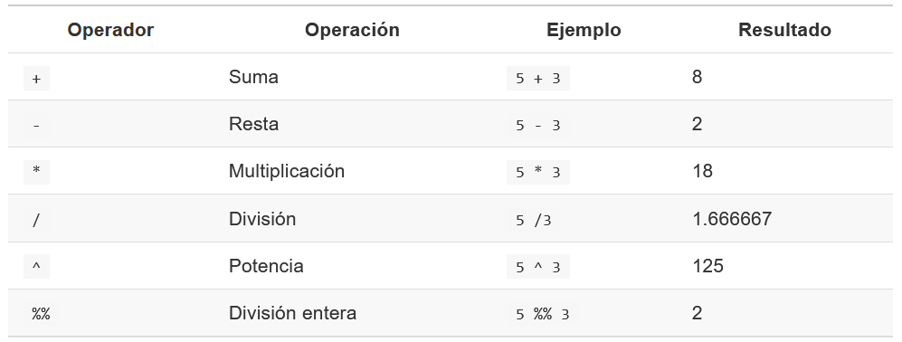
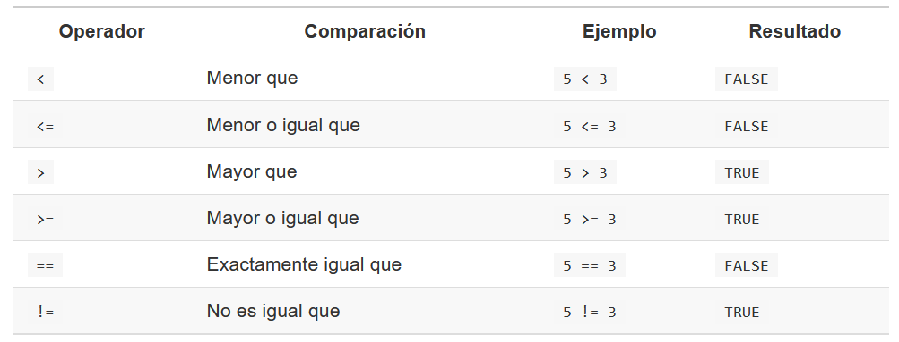
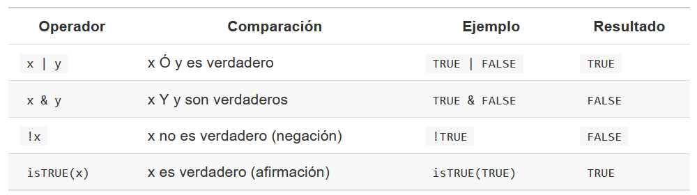

Reconocer los tipos de variables disponibles en R
Construir series de datos con distintos procedimientos
Realizar operaciones básicas en R (vectores, matrices, dataframes)
Los datos son registros, observaciones o mediciones de cosas (personas, animales, localidad, clima) que ocurren en el tiempo y el espacio. Estos pueden ser cuantitativos o cualitativos. En R los datos pueden ser de diferentes tipos. Cada tipo tiene características particulares que los distinguen de los demás. Entre otras cosas algunas operaciones sólo pueden realizarse con tipos de datos específicos.
R tiene cinco clases básicas de variables:
Entero, representan números enteros. Pueden ser usados en operaciones matemáticas.
Numérico, son datos numéricos, es decir, pueden representar
valores enteros o fracción. Son también llamados double o
float.
Cadena de texto, es un tipo de dato representado como texto, es
decir, secuencias de caracteres. Se reconoce fácilmente debido a que se
encuentran entre comillas " "
Factor, es un dato al que se le asigna una etiqueta (presenta niveles. Por ejemplo: los números 1 y 2 pueden representar a etiquetas femenino y masculino respectivamente.
Lógico, son datos que contienen unicamente dos valores posibles:
verdadero(TRUE) o falso (FALSE). Representan
una condición.
Valores perdidos y vacíos, representa la ausencia de datos.
tibble::tibble(
Tipo = c("Entero",
"Numérico",
"Cadena de texto",
"Factor",
"Lógico",
"Persido",
"Vacío"),
Ejemplo = c("1", "2.4", "\"a\"", "2", "TRUE", "NA", "NULL"),
`Nombre en inglés` = c("integer", "numeric","character",
"factor", "logical", "NA", "null")) %>%
kbl(booktabs = T) %>%
kable_styling(bootstrap_options = "striped",
full_width = F,
position = "center")| Tipo | Ejemplo | Nombre en inglés |
|---|---|---|
| Entero | 1 | integer |
| Numérico | 2.4 | numeric |
| Cadena de texto | “a” | character |
| Factor | 2 | factor |
| Lógico | TRUE | logical |
| Persido | NA | NA |
| Vacío | NULL | null |
Se puede verificar el tipo de un dato con la función
class(). Esto es de utilidad para asegurar las operaciones
que deseamos realizar se puedan llevar a cabo con éxito. La función
class() recibe como argumento un dato o vector y devuelve
el nombre del tipo al que pertenece.
class("A")## [1] "character"El objeto básico de R es el vector:
vector(mode = "character", length = 9)## [1] "" "" "" "" "" "" "" "" ""vector(mode = "numeric", length = 9)## [1] 0 0 0 0 0 0 0 0 0Ejemplos:
# Usando función seq (vector del tipo numérico)
miVector_1 <- seq(from = 1, to = 10, by = 1)
# Usando la función c() concatenar (vector del tipo numérico)
miVector_2 <- c(1, 2, 3, 4, 5)
# Usando el objeto letter (vector del tipo caracter)
miVector_3 <- c(letters)
# Usando la función rep
miVector_4 <- rep(x = 13, times = 4)En R existen diferentes funciones. Éstas han sido diseñadas para
realizar una tarea específica. Se identifican por tener un nombre
particular seguido por unos paréntesis (). Dentro de los
paréntesis uno puede agregar diferentes argumentos que permitirán
controlar los ajustes de la función. Ejemplo:
# Crear una secuencia numérica del 1 al 10 cada 2 unidades
seq(from = 1, to = 10, by = 2)## [1] 1 3 5 7 9# Redondear un número
round(x = 2.458793, digits = 2)## [1] 2.46# Sumar los primeros 5 números
sum(c(1:5))## [1] 15# Obtener la raíz cuadrada
sqrt(16)## [1] 4# Obtener asistencia o ayuda
# help(sum)Por otro lado, con frecuencia, se deseará seleccionar algunos
elementos de un vector. Este proceso se denominará indexación, para tal
fin se debe emplear los corchetes ([])
# Seleccionar el 5to elemento del vector "miVector_1"
miVector_1[5]## [1] 5# Seleccionar el 3er elemento del vector "miVector_3"
miVector_3[3]## [1] "c"# Seleccionar el 2do y 5to elemento del vector "miVector_3"
miVector_3[c(2,5)]## [1] "b" "e"Son objetos que contienen datos. Cuando utilizamos R, estamos manipulando estas estructuras.
Una estructura de datos puede tener diferentes características que las distinguen una de otra como por ejemplo el número de dimensiones, o si son datos homogéneos o heterogéneos.
knitr::include_graphics("figures/estructuraDatos.PNG")Principales estructuras de control en R
Es la estructura más simple en R. Un vector es una colección de uno o más datos del mismo tipo. Dos propiedades importantes son:
Tipo, un vector tiene el mismo tipo de dato (númerico, lógico, caracter)
Largo, es el número de elementos que contiene un vector. El largo es la única dimensión que tiene esta estructura de datos.
Para crear un vector existen diferentes funciones, una de ellas es
c()
# Vector numérico
c(1,4,5,6,7)## [1] 1 4 5 6 7# Vector de cadena de texto
c("reloj","mesa","cadena")## [1] "reloj" "mesa" "cadena"# Vector lógico
c(TRUE, TRUE, FALSE, TRUE, FALSE)## [1] TRUE TRUE FALSE TRUE FALSEPodemos crear vectores que son combinaciones de vectores
miVector_1 <- c(3,6,8)
miVector_2 <- c(2,9,3)
miVector_3 <- c(miVector_1, miVector_2)Si intentamos combinar datos de diferentes tipos en un mismo vector, R realizará coerción automáticamente, por ejemplo:
miVector_4 <- c(5,7,9)
class(miVector_4)## [1] "numeric"Si intentamos agregar un dato del tipo caracter, el vector automáticamente se transformará en uno del tipo caracter.
miVector_5 <- c(miVector_4,"a")
class(miVector_5)## [1] "character"Las operaciones aritméticas y relacionales pueden vectorizarse. Si aplicamos a un vector, la operación se realizará para cada uno de los elementos que contiene el vector.
# Vector numérico
miVector_4## [1] 5 7 9# Operaciones aritméticas
miVector_4 + 2## [1] 7 9 11miVector_4 * 2## [1] 10 14 18miVector_4 %% 2## [1] 1 1 1miVector_4 > 7## [1] FALSE FALSE TRUEmiVector_4 < 2## [1] FALSE FALSE FALSEmiVector_4 == 7## [1] FALSE TRUE FALSEEsta manera de operar es muy eficiente, especialmente cuando se trabaja con una gran cantidad de datos. Aunque este mismo proceso de vectorización puede funcionar en otras estructura de datos.
Las matrices pueden ser descritas como vectores multidimensionales. Al igual que un vector únicamente pueden contener datos de un sólo tipo pero además de largo, tienen más dimensiones (largo y alto). Es una estructura de datos de uso común en R en la que nos enfocaremos en esta sección.
Las matrices se pueden crear con la función matrix().
Esta función acepta dos argumentos: nrow y
ncol las cuales especifican el número de filas y columnas,
respectivamente.
# Vector numérico
1:6## [1] 1 2 3 4 5 6# Matriz sin especificar el N° de filas o columnas
matrix(1:6)## [,1]
## [1,] 1
## [2,] 2
## [3,] 3
## [4,] 4
## [5,] 5
## [6,] 6# Matriz con 4 filas y 4 columnas
matrix(1:18, nrow = 3, ncol = 6)## [,1] [,2] [,3] [,4] [,5] [,6]
## [1,] 1 4 7 10 13 16
## [2,] 2 5 8 11 14 17
## [3,] 3 6 9 12 15 18Los datos se acomodaran en el orden de arriba - abajo y de izquierda a derecha. Es importante mencionar que si el número de elementos es mayor a las celdas de la matriz, se acomodarán todos los datos posibles y los demás serán omitidos.
# El vector contiene 12 elementos pero la matriz solo 9 celdas
matrix(1:12, nrow = 3, ncol = 3)## Warning in matrix(1:12, nrow = 3, ncol = 3): data length
## differs from size of matrix: [12 != 3 x 3]## [,1] [,2] [,3]
## [1,] 1 4 7
## [2,] 2 5 8
## [3,] 3 6 9Si por el contrario, el número de celdas es mayor al número de elementos, estos se reciclaran sin antes advertirnos. Luego R empezará a usar los elementos a partir del primero de ellos.
matrix(1:18, nrow = 6, ncol = 4)## Warning in matrix(1:18, nrow = 6, ncol = 4): data length [18]
## is not a sub-multiple or multiple of the number of columns
## [4]## [,1] [,2] [,3] [,4]
## [1,] 1 7 13 1
## [2,] 2 8 14 2
## [3,] 3 9 15 3
## [4,] 4 10 16 4
## [5,] 5 11 17 5
## [6,] 6 12 18 6Otra forma de crear matrices es uniendo vectores con las funciones:
cbind() para unir vectores, usando cada uno como
columna
rbind() para unir vectores, usando cada uno como un
renglón.
# Usamos los vectores antes creados
# miVector_1
# miVector_2
# miVector_4
miMatriz_1 <- rbind(miVector_1, miVector_2)
# Resultado
miMatriz_1## [,1] [,2] [,3]
## miVector_1 3 6 8
## miVector_2 2 9 3miMatriz_2 <- rbind(miVector_1,
miVector_2,
miVector_4)
# Resultado
miMatriz_2## [,1] [,2] [,3]
## miVector_1 3 6 8
## miVector_2 2 9 3
## miVector_4 5 7 9Si utilizamos cbind() cada vector será una columna
miMatriz_3 <- cbind(miVector_1,
miVector_2,
miVector_4)De la misma manera como con la función matrix(), los
elementos serán reciclados para formar una estructura rectangular y se
nos muestra un mensaje de advertencia
# Elementos de diferentes largos
miMatriz_4 <- cbind(miVector_1, miVector_2, miVector_3)
# Resultado
miMatriz_4## miVector_1 miVector_2 miVector_3
## [1,] 3 2 3
## [2,] 6 9 6
## [3,] 8 3 8
## [4,] 3 2 2
## [5,] 6 9 9
## [6,] 8 3 3Por último, las matrices pueden contener valores NA para representar valores perdidos, por ejemplo:
vector_1 <- c(2, 5, NA)
vector_2 <- c(NA, 98, 43)
miMatriz_5 <- rbind(vector_1, vector_2)Al igual que los vectores, sólo pueden contener un tipo de dato. Sin
embargo, a diferencia del primero, las matrices pueden tener más de una
dimensión. Podemos obtener las dimensiones de una matriz con la función
dim()
miMatriz_1## [,1] [,2] [,3]
## miVector_1 3 6 8
## miVector_2 2 9 3dim(miMatriz_1)## [1] 2 3Las operaciones aritméticas también son vectorizadas cuando se aplica a una matriz. La operación es aplicada a cada uno de los elementos.
miMatriz_2## [,1] [,2] [,3]
## miVector_1 3 6 8
## miVector_2 2 9 3
## miVector_4 5 7 9# suma
miMatriz_2 + 1## [,1] [,2] [,3]
## miVector_1 4 7 9
## miVector_2 3 10 4
## miVector_4 6 8 10# multiplicación
miMatriz_2 * 2## [,1] [,2] [,3]
## miVector_1 6 12 16
## miVector_2 4 18 6
## miVector_4 10 14 18# potencia
miMatriz_2 ^ 2## [,1] [,2] [,3]
## miVector_1 9 36 64
## miVector_2 4 81 9
## miVector_4 25 49 81Si intentamos realizar una operación aritmética a una matriz que presenta valores perdidos (NA), las operaciones sólo serán realizadas para aquellos elementos válidos, devolviendo NA cuando corresponda.
# Matriz con NA
miMatriz_5## [,1] [,2] [,3]
## vector_1 2 5 NA
## vector_2 NA 98 43miMatriz_5 / 2## [,1] [,2] [,3]
## vector_1 1 2.5 NA
## vector_2 NA 49.0 21.5Multiplicación de matrices. Un multiplicación de
matrices ocurrirá siempre y cuando el número de columnas de la primera
matriz es igual al número de filas de la segunda matriz. En R, el
operador aritmético para realizar esta operación es %*%. Si
empleamos solo el operador * la multiplicación se realizará
por elemento.
# Multiplicación matricial
miMatriz_1 %*% miMatriz_2## [,1] [,2] [,3]
## miVector_1 61 128 114
## miVector_2 39 114 70# Multiplicación por elemento
miMatriz_1 * miMatriz_5## [,1] [,2] [,3]
## miVector_1 6 30 NA
## miVector_2 NA 882 129Son estructuras de datos de dos dimensiones que pueden almacenar datos de diferentes tipos, por tanto son heterogéneas. Es la más usada para realizar análisis de datos.
knitr::include_graphics("figures/estructuraDataframe.PNG")
Para crear un estructura de datos del tipo dataframe empleamos la
función data.frame(). Recordemos que un dataframe
esta compuesto por vectores.
mi_df <-
data.frame(nombre = c("Alberto", "Maria", "Javier"),
edad = c(19, 21, 20),
talla = c(170, 165, 162))Podemos usar la función dim() para determinar las
dimensiones del dataframe.
dim(mi_df)## [1] 3 3El largo de un data frame es igual al número de columnas
length(mi_df)## [1] 3La función names() nos permite ver los nombres de las
variables (columnas).
names(mi_df)## [1] "nombre" "edad" "talla"Por otro lado, podemos importar un data frame en un formato distinto
a R como por ejemplo en formato .xlsx, .csv,
.txt entre otros. Para importar un dataframe en formato
csv o txt se puede emplear la función
read.csv() o read.table(),
respectivamente.
Siempre se debe direccionar antes la ruta de trabajo mediante la
función setwd() o crear un proyecto en R dentro del cual
contenga todas los archivos de trabajo.
crabs <- read.csv("datos/dataSem_4_2021.txt")Al igual que una matriz, si aplicamos una operación aritmética a un dataframe, esta se vectorizará.
head(crabs)## Year Island Month Sex CL
## 1 2013 Sector_1 11 F 123.64
## 2 2013 Sector_1 11 F 118.47
## 3 2013 Sector_1 11 F 115.53
## 4 2013 Sector_1 11 F 113.98
## 5 2013 Sector_1 11 F 108.75
## 6 2013 Sector_1 11 F 106.12head(crabs$CL / 10)## [1] 12.364 11.847 11.553 11.398 10.875 10.612Algunas funciones que pueden resultar útiles para explorar
rápidamente la estructura de nuestros datos son: summary(),
head(), tail(), str().
# Resumen estadístico de los datos
summary(mtcars)
# Primeras filas de mtcars
head(mtcars)
# últimas filas de mtcars
tail(mtcars)
# Estructura (tipo de dato) de mtcars
str(mtcars)Para iniciar esta sección es importante recordar los diferentes tipos de operadores que se utilizó en las clases anteriores. Estas fueron:



Con los operadores en mente, procederemos a manipular la base de
datos crabs que importamos anteriormente.
head(crabs)## Year Island Month Sex CL
## 1 2013 Sector_1 11 F 123.64
## 2 2013 Sector_1 11 F 118.47
## 3 2013 Sector_1 11 F 115.53
## 4 2013 Sector_1 11 F 113.98
## 5 2013 Sector_1 11 F 108.75
## 6 2013 Sector_1 11 F 106.12# Seleccionar datos
# Primer argumento son las filas
# El segundo, las columnas (si no se coloca un número)
# por defecto R seleccionará todas las columnas
crabs[3,]
crabs[1:5,]
crabs[c(2,4),]
crabs[,-1]
# Otras formas de selección
crabs$Year
crabs[,c("Year", "Island")]# Filtrar datos
# Se filtran los valores de cangrejos cuya
# longitud de cefalotorax es mayor a 100
crabs[crabs$CL > 100,]
# Se filtran los valores de cangrejos cuya
# longitud de cefalotorax se encuentre entre
# 100 y 110
crabs[crabs$CL >= 100 & crabs$CL <= 110,]
crabs[crabs$Sex == "F" & crabs$Month > 10,]
# Se filtran solo los cangrejos de sexo hembras ("H")
# y/o ovígeras ("O").
crabs[!crabs$Sex == "M",]# Ordena el dataframe en función al sexo
crabs[order(crabs$Sex),]
# Ordena el dataframe en función al sexo y mes
crabs[order(crabs$Sex, crabs$Month),]Operación útil para hacer operaciones por fila o columna de una matriz.
x <- matrix(rep(1:6, each = 5), nrow = 5, ncol = 6)
# Adjunta el vector resultado en una nueva columna
x.1 <- cbind(x, apply(x, 1, sum))
# Adjunta el vector resultado en una nueva fila
x.2 <- rbind(x, apply(x, 2, sum))# Valores NA
table(is.na(crabs))
# Cuales son los NA
which(is.na(crabs))
crabs[which(is.na(crabs)),]
# Eliminar NA
crabs <- na.omit(crabs)